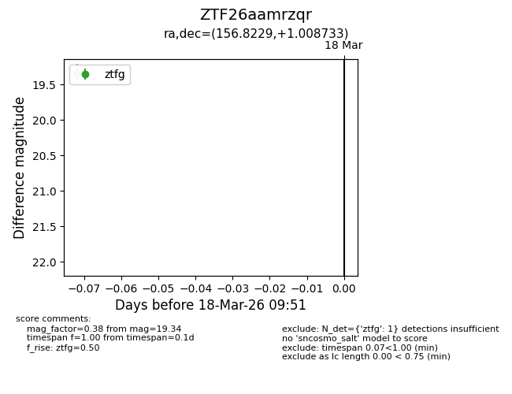
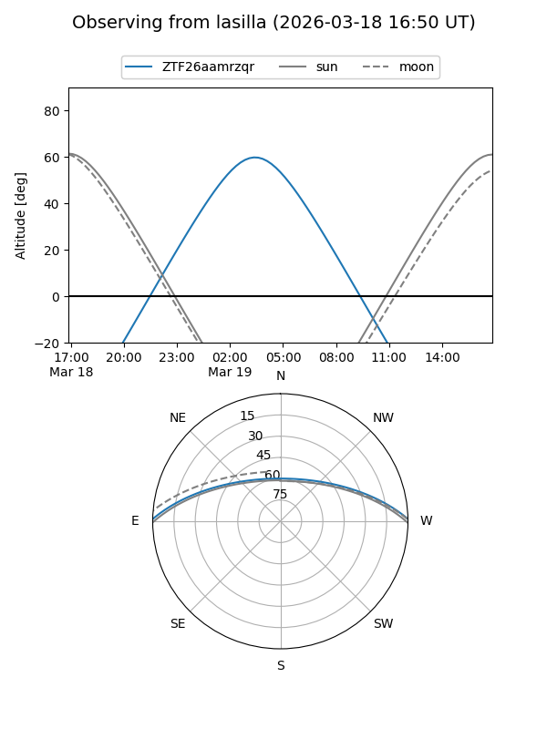
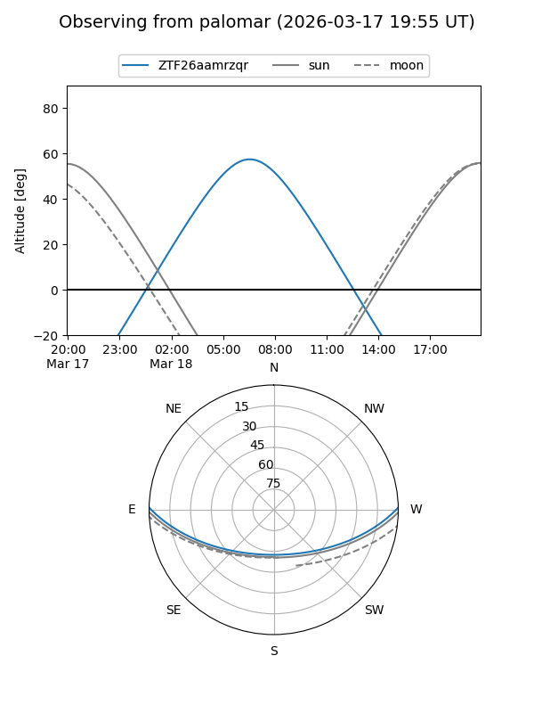

ZTF26aamrzqr
Target ZTF26aamrzqr at 2026-03-18 09:53
Aliases and brokers:
FINK: link
Lasair: link
ALeRCE: link
alt names
ZTF26aamrzqr (ztf,fink_ztf)
Coordinates:
equatorial (ra, dec) = 156.8229,+1.00873
equatorial (HMS+DMS) = 10:27:17.50,+01:00:31.44
galactic (l, b) = (243.9011,+46.68536)
Flags:
Photometry:
last ztfg=19.34
1 ztfg detections
Lightcurve

Visibility


Additional plots